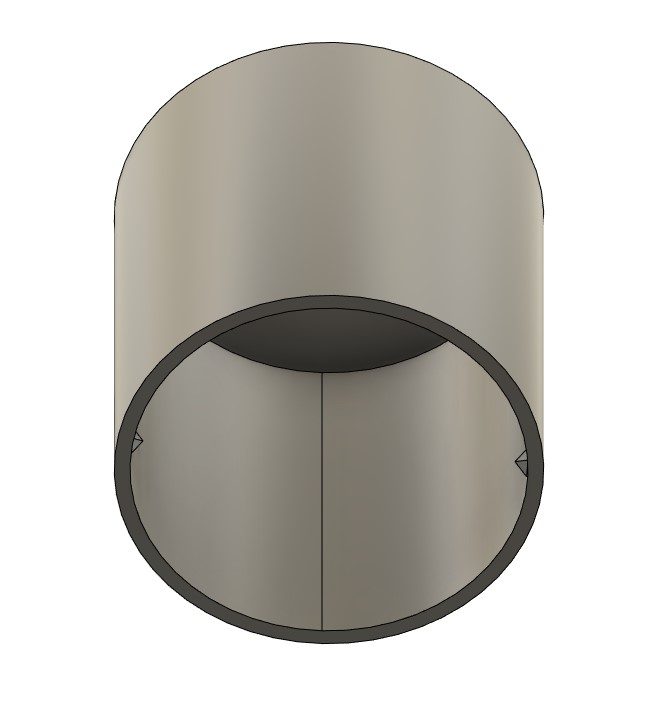

Puzzle Box


Although puzzles require simple geometry, wrapping geometry around a cylinder effectively can be a challenge. After trying a variety of methods, I found a mix of sheet metal design and 3D design effective at creating the slots in this puzzle box. One of the important aspects of this design is to ensure the wrapping of the maze has consistent geometry to ensure that the lid has correct tolerances for it to slide within the puzzle. This project provided motivation to learn different techniques in CAD design, increasing my creativity and resourcefulness in approaching uncommon design geometries.